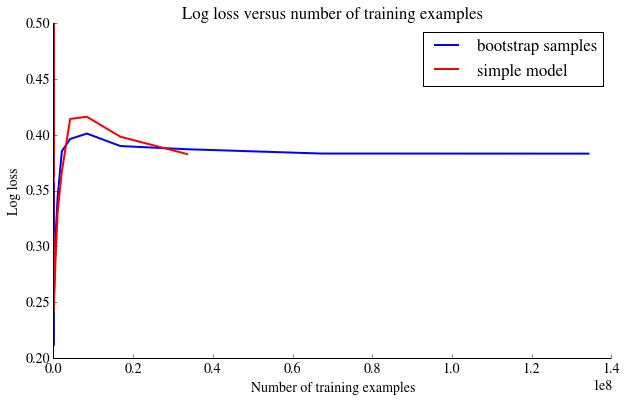

Figure 2: Growth of Features
From the above plots we can see that a few of the categories seem to scale with the size of the dataset. Particularly "device_id" and "device_ip" grow linearly with the number of examples and therefore decided to remove tehm from our features when training the model.
At this stage we experimented with fitting Naive Bayes and Logistic Regression Models to 5000 example subsets of the data. The details can be found in the
python notebook but in summary, as would be expected, the model was massivey overfit due to using too many features for the number of training examples. Both models ended up predicting exclusively no clicks as this maximised the accuracy. To proceed, we needed to consider an online learner that could handle the data size.
Vowpal Wabbit Online Learner
Vowpal Wabbit is a large scale online learner, designed for learning from large datsets as it only reads a fraction of training examples into memory at any point. It seems highly suited for this example as it can accomodate models becoming out-dated, dealing with divergence of distributions over time and unbounded features (you may constantly collect new categorical feature values). We found the
ML Wave blog to be a great introduction to using Vowpal Wabbit in Kaggle competitions.
We initially ran a Vowpal Wabbit logistic regression model. We were able to specfy the loss function to be log loss (--logistic loss) and achieved a log loss on the test sample upon submission to Kaggle of 0.5641370.
(Note smaller is better).
Model Tuning & Debugging
Vowpal Wabbit has the option to output the average loss to terminal while training, as an aide to debugging. In our above model the loss was seen to decrease with training as expected, but it had a 'bump' after which it increased. This could be due to the model overtraining to some aspect of the data which is more prevalent in the training examples initially, or perhaps the model learning rate. With regards to the first possibility, we postulated that a cause could be seasonality in the data and training to a particular day of the week and therefore tried to randomly shuffle the dataset.
Due to the file size, shuffling locally was not succesfull and neither was an attempted AWS MAP Reduce job on the dataset, due to file upload limitations. We therefore opted for bootstrapping
--bs : taking the average parameters from 10 seperate models, this hopefully helps our final model to generalise. We also chose to run multiple passes over the data, hoping to avoid overfitting our model to one portion of the dataset. We used the option
--early_terminate to stop the passes early if we observed the validation error consistently increases and therefore 'overfitting' occurs.
The plot below shows the log loss error with our initial model and our model using boostrapping and multiple passes.

Figure 3: Log loss versus number of training examples
The above plot shows that even with bootstrapping and running multiple passes, we observe the 'bump' showing increase in log loss error before stabilisation; this seems to indicate that the data would still benefit from being shuffled and probably suffers from some seasonality effects. However the 'bump' has been reduced so there seems to have been some advantage to running bootstrap and multiple passes.
We also considered whether feature reduction might be possible to lower computation time and potentially allow for more complex learning methods. Using the
vw--varinfo option in Vowpal Wabbit we analysed the weightings given to different features within the trained models. We plotted histograms of feature weightings in order to explore the question:
How are the model features weighted within each category